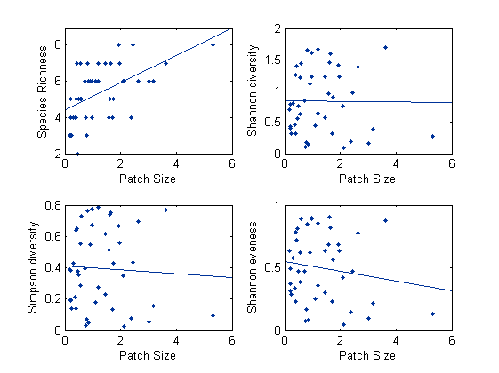
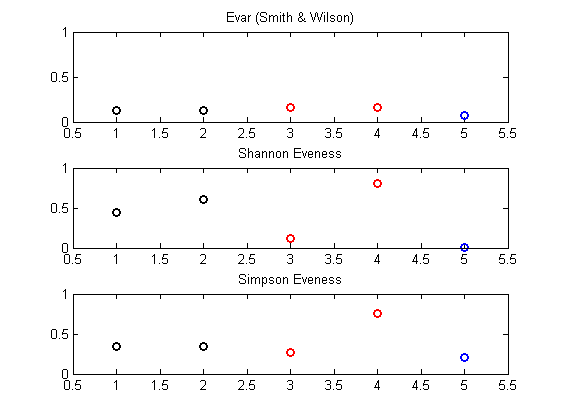

Calculating Bio-diveristy indices using [bio_diversity]
This file provide usage examples and documentation for the function [bio_diveristy]
Use my Iva insect data [X_community] as example , and I will use my color plate [my_colorplates.mat] for plotting .
by Wei-Ting Lin, 2014/10/15
Contents
Setting up and load data
clear;clc load X_community load my_colorplates
[X_community] contains two matrices, and two "name" files:
- insect_data : 44 x 13 matrix, data for 44 patches and 13 species
- patch_met : 44 x12 matrix, data for 44 patches and 12 patch attributes
- insect_names : content of the insects (each column in [insect_data])
- met_names : content of the patch attributes I like to keep data as a matrix and put their names in a seperate file. We are only using the [insect_data] here.
Using [bio_diversity.m]
Syntax
output = bio_diversity (X)
X : data, N x S matrix; each row is the community data from one site, each column represent a species. If N = 1, diversity at larger scale will not be calculated.
output : a structure,
- output.R : local (alpha) richness
- output.H : local Shannon diversity index
- output.H_even : Evenness index, J' sensu. (Smith & Wilson, 1996)
- output.D : Simpson's dominance index
- output.D_diversity : 1-D : Simpson's diversity index
- output.D_reciprocal : 1/D : Simpson's reciprocal index
- output.D_even : Evenesee index ,E_1/D sensu. (Smith & Wilson, 1996)
- output.Evar : Evenness index, Evar sensu. (Smith & Wilson, 1996)
If the N>1:
- output.R_gamma : Reginal scale (gamma) Richness
- output.R_beta_w : Beta-diveristy by (Whittaker, 1960)
- output.R_beta_add : Additive version of classical beta-diversity
- output.H_gamma : Shannon diveristy at regional (gamma) scale
- output.H_beta : Beta diversity based on Shannon index (Jost, 2007)
Calculate diversity indices for patch 1
Patch1 = bio_diversity(insect_data (1,:))
Patch1 =
R: 7
H: 1.2309
H_even: 0.6325
D: 0.3825
D_diversity: 0.6175
D_reciprocal: 2.6144
D_even: 0.3735
Evar: 0.2769
Calculate diversity indices for all patches
Results are saved in structure D
Now the local indices are stored in vectors, and there are beta and gamma indices in the output
D = bio_diversity(insect_data)
D =
R_gamma: 13
R_beta_w: 2.4034
R_beta_add: 7.5909
H_gamma: 0.8255
H_beta: 0.8745
R: [44x1 double]
H: [44x1 double]
H_even: [44x1 double]
D: [44x1 double]
D_diversity: [44x1 double]
D_reciprocal: [44x1 double]
D_even: [44x1 double]
Evar: [44x1 double]
Application: Diveristy vs. Patch size
Question : What is the effect of patch size on biodiversity?
Verify that data about patch size ("area") is stored in patch_met(:,5)
met_names(5) patch_size = patch_met(:,5);
ans =
'area'
Effects of patch size on richness, diversity, and eveness
subplot(2,2,1)
plot(patch_size,D.R,'.','color',mycolor(3,:))
lsline
xlabel('Patch Size');ylabel('Species Richness')
subplot(2,2,2)
plot(patch_size,D.H,'.','color',mycolor(3,:))
lsline
xlabel('Patch Size');ylabel('Shannon diversity')
subplot(2,2,3)
plot(patch_size,D.D_diversity,'.','color',mycolor(3,:))
lsline
xlabel('Patch Size');ylabel('Simpson diversity')
subplot(2,2,4)
plot(patch_size,D.H_even,'.','color',mycolor(3,:))
lsline
xlabel('Patch Size');ylabel('Shannon eveness')
clear D
 It seems that even the species richness increases with patch size, patch size dosen't seems to affect "Biodiversity". This probably because species abundance are less "even" in larger patches. (Diversity indice reviel both richness and eveness pattern.)
More about Eveness indices
Adapted from Smith & Wilson, 1996
Here I use some artifitial communities to test the feature of three diversity indices in the function
- output.H_even : Derived from Shannon's index, the "wiki" result: http://en.wikipedia.org/wiki/Species_evenness
- output.D_even : Derived from Simpson's index
- output.Evar : Invented and reconmended by Smith & Wilson, 1996
The artifitial communities
C{1} = [100 1 1 100 1 1];
C{2} = [100 1 1 100 1 1 100 1 1 100 1 1 ];
C{3} = [100 1 1 1];
C{4} = [100 100 100 1];
C{5} = [1999 1 1 1 1];
Tests for some features of good evenness indices
- Insensitive to richness, that means Community 1 and 2 should have the similar eveness value
- Symmetry to rare and abundant species, that means Community 3 and 4 should have similar eveness value
- A very uneven community like Community 5 should have eveness value close to 0
Save three Evenness indices in three vectors:
Evar = zeros(1,5); % Evar EH = zeros(1,5); % The Shannon one ED = zeros(1,5);% The Simpson one for i = 1:5 D = bio_diversity(C{i}); Evar(i) = D.Evar; EH(i) = D.H_even; ED(i)= D.D_even; end
Plot the results
subplot(3,1,1)
plot(1:2,Evar(1:2),'ok','linewidth',2);hold on
plot(3:4,Evar(3:4),'or','linewidth',2)
plot(5,Evar(5),'ob','linewidth',2)
axis([0.5 5.5 0 1])
title('Evar (Smith & Wilson)')
subplot(3,1,2)
plot(1:2,EH(1:2),'ok','linewidth',2);hold on
plot(3:4,EH(3:4),'or','linewidth',2)
plot(5,EH(5),'ob','linewidth',2)
axis([0.5 5.5 0 1])
title('Shannon Eveness')
subplot(3,1,3)
plot(1:2,ED(1:2),'ok','linewidth',2);hold on
plot(3:4,ED(3:4),'or','linewidth',2)
plot(5,ED(5),'ob','linewidth',2)
axis([0.5 5.5 0 1])
title('Simpson Eveness')
 Major references:
- Anderson et al. (2011) Ecology Letters 14: 19–28
- Smith & Wilson (1996) Oikos, Vol. 76, No. 1
- How to calculate biodiversity? webpage by Maryland Sea Grant: http://ww2.mdsg.umd.edu/interactive_lessons/biofilm/diverse.htm